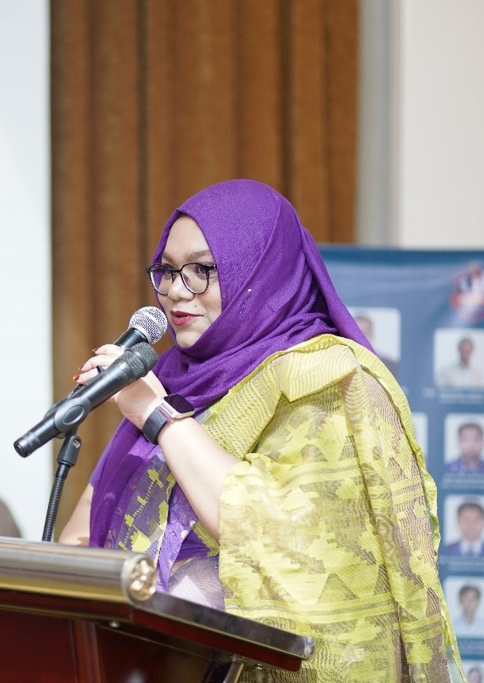

Faria Soroni
AI Researcher | Data Scientist | Human Rights Advocate
M.Sc. in Computer Science & Engineering (Data Science), BRAC University | B.Sc. in Computer Science & Engineering (Artificial Intelligence), North South University | IEEE Published Author | 100+ Citations | Best Paper Award Winner. Passionate about Artificial Intelligence, Human-Centered AI, Explainable Systems, and ethical technology for social impact.